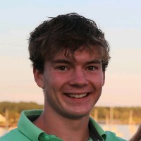

Non-Profit Search
We are a group of service minded Tufts students who want to
make it easier to find and contribute to accredited charities.
 Alana Sendlakowski
Alana is a third-year undergrad student at the Tufts University College of Engineering where she is pursuing a major in Computer Science and a minor in Dance. She has taken various coding courses and has worked with C, C++, JavaScript, Java, Python, HTML, and SQL. She is a strong leader in her community as the current co-director of Tufts Tap Ensemble, e-board member of the Society of Women Engineers, and e-board member for the Women in Technology conference at Tufts University which had over 400 participants. Working 1-on-1 with students as a course assistant for CS15 Data Structures has taught her how to effectively communicate programming ideas to others and how to understand the ideas communicated to her. This position accelerated her proficiency in locating bugs in complex code and finding a solution.
Alana Sendlakowski
Alana is a third-year undergrad student at the Tufts University College of Engineering where she is pursuing a major in Computer Science and a minor in Dance. She has taken various coding courses and has worked with C, C++, JavaScript, Java, Python, HTML, and SQL. She is a strong leader in her community as the current co-director of Tufts Tap Ensemble, e-board member of the Society of Women Engineers, and e-board member for the Women in Technology conference at Tufts University which had over 400 participants. Working 1-on-1 with students as a course assistant for CS15 Data Structures has taught her how to effectively communicate programming ideas to others and how to understand the ideas communicated to her. This position accelerated her proficiency in locating bugs in complex code and finding a solution.
 Owen Prendergast
Third year undergraduate student at Tufts University majoring in Computer Science and Science, Technology, and Society.
Has significant independent and collaborative programming experience in languages such as C, C++, C#, and Python through university coursework and research in the IDEA Lab at Tufts, expanding his skill set through independent projects like PeakSynth, a C++ audio processing plugin that uses MIDI input and IIR filtering to pull harmonics out of atonal audio.
Owen Prendergast
Third year undergraduate student at Tufts University majoring in Computer Science and Science, Technology, and Society.
Has significant independent and collaborative programming experience in languages such as C, C++, C#, and Python through university coursework and research in the IDEA Lab at Tufts, expanding his skill set through independent projects like PeakSynth, a C++ audio processing plugin that uses MIDI input and IIR filtering to pull harmonics out of atonal audio.

Chris Holden
Chris is a third year undergraduate student at Tufts University School of Arts and Science. He is pursuing a degree in Computer Science and Quantitative Economics. He is comfortable coding in C, C++, Java, SQL, and Python as well as using modeling programs like Power BI and STATA. Captaining the ultimate frisbee program at Tufts, where he plans and schedules tryouts, practices, tournaments, and social events in the over 300 member program, has helped grow his ability to lead others. He enjoys finding solutions to complex problems in his work both contracting and coding.